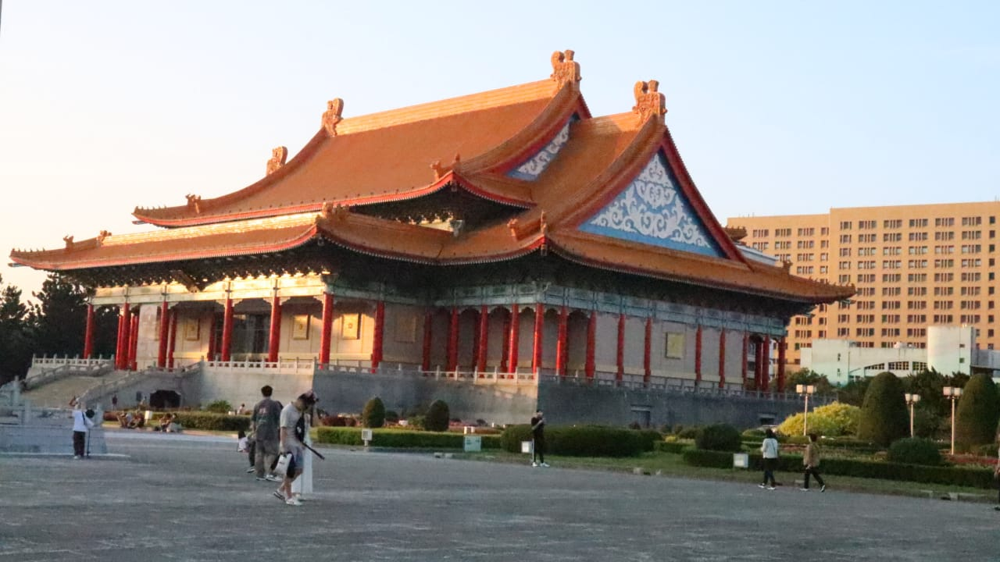
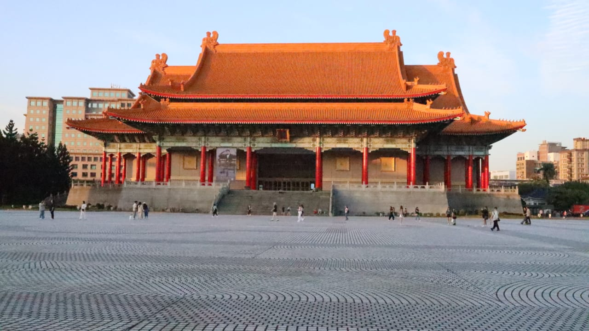
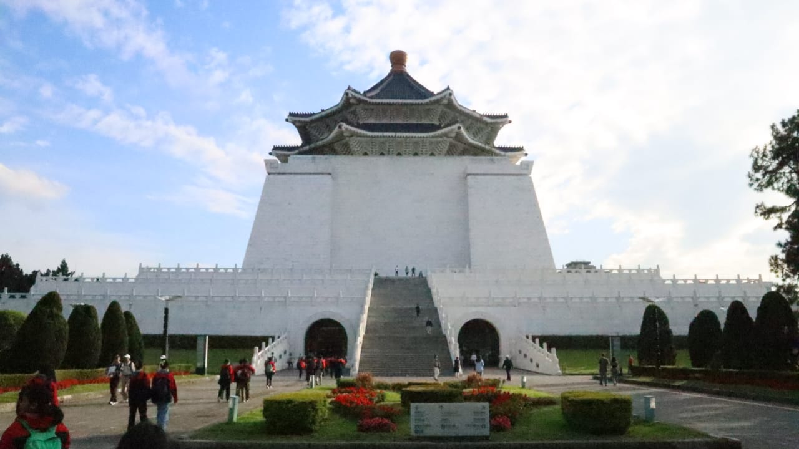
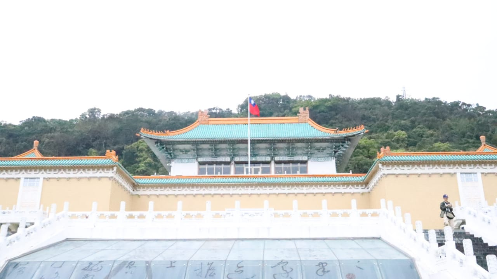

Chiang Kai Shek Memorial Hall:
1. Apa fungsi Chiang Kai-Shek memorial hall di masa lalu dan masa sekarang?
| Masa Lalu | Masa Sekarang |
|---|---|
| Kantor Chiang Kai Shek | Tempat Wisata |
| - | Tempat Protes (tahun 2020-an) |
2. Bagaimana peran Chiang Kai-Shek dalam membentuk Taiwan sebagai negara modern? Apa warisan politik dan budayanya yang berkontribusi pada semangat nasionalisme Taiwan?
Memberikan identitas kepada warga Taiwan, membuat mereka merasa bahwa mereka memiliki negara sendiri.
3. Bagaimana Chiang Kai-Shek dan rezim Kuomintangnya berusaha membangun persatuan dan identitas nasional di Taiwan? Bagaimana pengaruh ini masih terasa hari ini?
Mempengaruhi hukum militer dalam menjaga stabilitas dan mencegah dari komunis.
4. Bagaimana National Palace Museum berperan dalam pendidikan sejarah dan membangun semangat nasionalisme di kalangan generasi muda Taiwan? Apa pendekatan yang diambil dalam mengajarkan sejarah dan budaya nasional?
Memiliki rasa kebanggaan kepada bahasa mandarin tradisional dan budaya mereka sendiri.

National Palace Museum:
1. Bagaimana sejarah awal dibangunnya National Palace Museum? Apa tujuan dibangunnya museum ini?
Museum ini dibangun untuk menyimpan seni & artefak berharga dari Istana Kekaisaran Tiongkok. Koleksi ini awalnya berasal dari kota Terlarang di Beijing dan dipindahkan ke Taiwan selama perang saudara Tiongkok.
2. Pilih satu artefak di National Palace Museum dan jelaskan apa yang artefak tersebut ungkapkan tentang kehidupan masyarakat pada zamannya!
Salah satu artefak yang saya temukan adalah patung bayi. Artefak ini adalah patung bayi yang terbaring. Artefak ini berasal dari dinasti Qing, Song, dan Ming. Biasanya artefak ini digunakan untuk bantal tidur.
3. Lakukan wawancara dengan pemandu untuk mengetahui contoh peninggalan masyarakat masa awal yang masih banyak digunakan masyarakat Taiwan hingga saat ini
Banyak peninggalan artefak Tiongkok yang bisa berharga besar berada di museum ini. Museum ini adalah museum no.1 yang menyimpan banyak artefak atau sumber utama untuk menyimpan artefak Tiongkok. Giok-giok ini juga berasal dari Chiang Kai Shek yg dibawa, ditemukan di tempat berbagai dinasti.